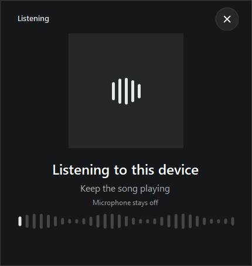

Song Scout
View on GitHub ↗
Song Scout
View on GitHub ↗
Free Windows tray app
Find the song playing on your PC.
Click Song Scout in your system tray. It checks the audio playing through your speakers and shows the track, without changing your microphone setup.
Latest release on GitHub

Three steps. One click from the tray.
Song Scout wakes up for a scan and closes the recognizer when it is done.
Play something
Use your browser, media player, or another app using your default Windows output.
Click the tray icon
Song Scout samples that output for a few seconds. It leaves your microphone alone.
See the match
Get the song and artist, artwork when available, and a link to open the track.
Before you install
The installer is free and works offline. Music recognition needs an internet connection.
- Windows
- 64-bit Windows 10 version 1607 or newer, or Windows 11
- Audio
- Captures system output. Call audio sharing that output may affect a match.
- Updates
- The app offers new versions before installing. It does not update silently.
- Good to know
- The installer is unsigned, so Windows may show a warning. Matching uses an unofficial Shazam service that may change.